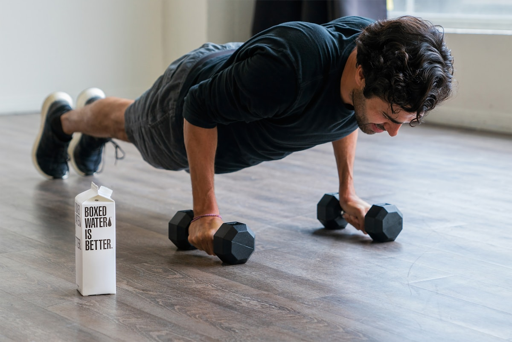

«Tenía miedo de mover el hombro después de la operación. Carla fue paciente, me fue quitando miedos y ahora vuelvo a nadar.»
Retiro · consulta individual
Tratamientos personalizados para tu bienestar
Fisioterapia profesional y rehabilitación en una consulta tranquila, con tiempo para escucharte y un plan claro desde la primera visita.

Áreas de trabajo
Valoración completa, terapia manual y pauta de ejercicios adaptada a tu caso.
Esguinces, tendinitis, roturas fibrilares y sobrecargas con progresión controlada.
Descarga muscular y trabajo de tejidos con objetivo clínico, no solo relax.
Ciáticas, cervicalgias y lumbalgias: tratamos la causa, no solo el síntoma.
Vuelta al running, bici o gimnasio con criterio y sin saltarte fases.
Seguimiento coordinado tras cirugía de rodilla, hombro, cadera o columna.
Cómo trabajamos
No vendemos paquetes cerrados. Cada persona entra por un motivo distinto y sale cuando recupera función, no cuando se acaban las sesiones.
Historia, gestos, movimientos. La primera visita es para entender, no para apuntar diez técnicas.
Manos, ejercicio y cambios sencillos en el día a día. Te llevas cosas que hacer en casa.
Cuando el cuerpo responde, espaciamos. El objetivo es que no nos necesites cada mes.
La fisioterapeuta
Colegiada nº 31.204 · Colegio de Fisioterapeutas de Madrid
Llevo once años en consulta. Me formé en terapia manual, punción seca y readaptación deportiva, pero lo que más me importa es que entiendas tu proceso. No creo en las sesiones eternas ni en los tratamientos que suenan bien en un folleto.
Esta consulta es mía: una sala, una camilla, tiempo de verdad. Si necesitas que hable con tu traumatólogo o entrenador, lo hacemos.
«Tenía miedo de mover el hombro después de la operación. Carla fue paciente, me fue quitando miedos y ahora vuelvo a nadar.»
«Llevaba un año con la espalda encajada. En la tercera sesión ya noté diferencia. Y lo mejor: me explicó por qué me pasaba.»
«Reservé por WhatsApp un martes y el jueves ya estaba. Trato directo, sin rodeos ni venta de bonos.»
Contacto
Dinos qué te ocurre. Respondemos con horario disponible el mismo día laborable.
C/ Narváez, 71 · 28009 Madrid